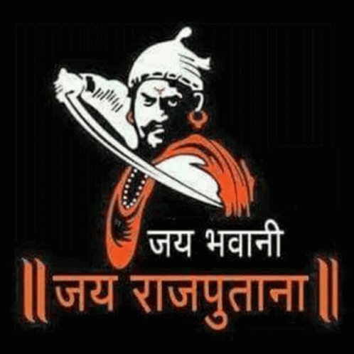

|  | chandelChandel or Chandela is a Rajput clan from India. Families belonging to this clan ruled several kingdoms in north India and held various feudal estates. The most notable of these were the Chandelas of Jejakabhukti, who ruled the Bundelkhand region. chandel The chandel of Jejakabhukti were a royal dynasty in Central India. They ruled much of the Bundelkhand region (then called Jejakabhukti) between the 9th and the 13th centuries. |
| dates | rulers |
|---|---|
| 1859-1965 | chandels rule in bundelkhand |
| 1900-1969 | harsh chnadel increase the whole chandels empire |
|